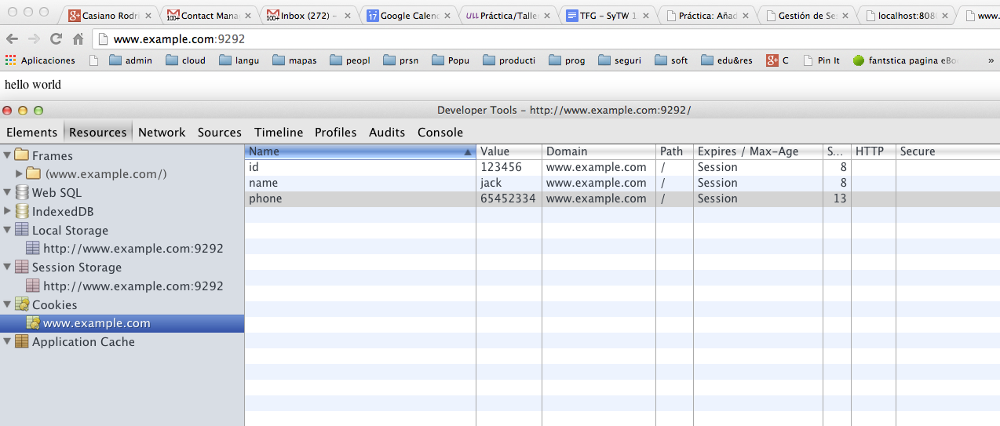
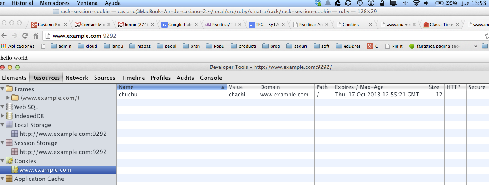
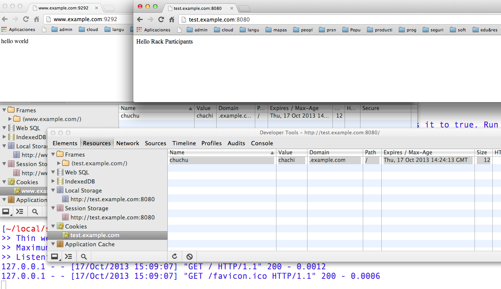
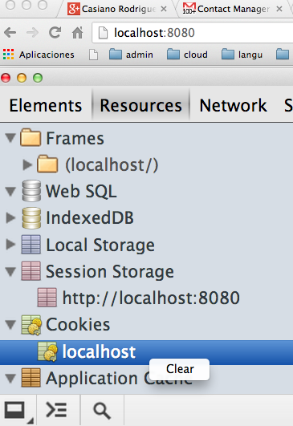
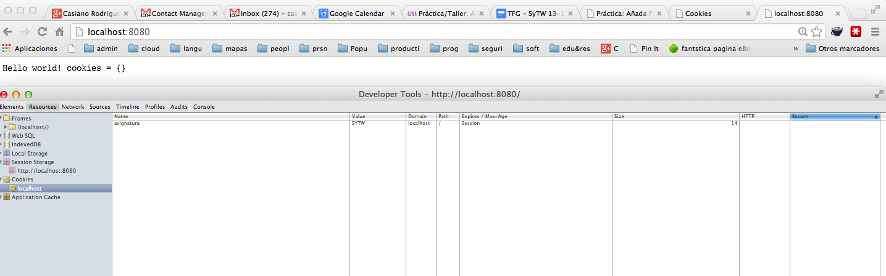
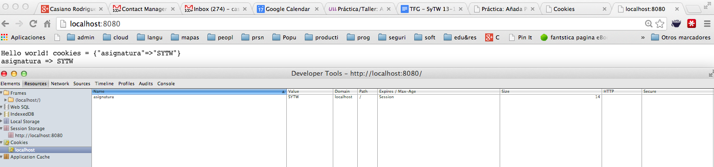

Sig: Gestión de Sesiones Sup: Rack, un Webserver Ruby Ant: Rack::Response Con:
Cookies may be used to maintain data related to the user during navigation, possibly across multiple visits.
www.example1.com.
ad.foxytracking.com, which, when
downloaded, sets a cookie belonging to the advert's domain
(ad.foxytracking.com).
www.example2.com, which also contains an advert from
ad.foxytracking.com,
and which also sets a cookie belonging to that domain
(ad.foxytracking.com).
Un cookie tiene los siguientes atributos:
Cuando ejecutamos este programa:
[~/local/src/ruby/sinatra/rack/rack-session-cookie(master)]$ cat study_cookie1.ru
run lambda { |e|
[ 200,
{ 'Content-Type' => 'text/html',
'Set-cookie' => "id=123456\nname=jack\nphone=65452334"
},
[ 'hello world' ]
]
}
y hacemos www.example.com un alias de 127.0.0.1:
[~]$ cat /etc/hosts ## # Host Database # # localhost is used to configure the loopback interface # when the system is booting. Do not change this entry. ## 127.0.0.1 localhost www.example.comal visitar la página
www.example.com:9292
y abrir las herramientas para desarrolladores
tenemos:

Observemos que:
www.example.com.
Modifiquemos el ejemplo anterior para establecer una fecha de caducidad:
[~/local/src/ruby/sinatra/rack/rack-session-cookie(master)]$ cat study_cookie2.ru
run lambda { |e|
t = Time.now.gmtime + 3*60
[ 200,
{ 'Content-Type' => 'text/html',
'Set-cookie' => "chuchu=chachi;expires=#{t.strftime("%a, %d-%b-%Y %H:%M:%S GMT")}"
},
[ 'hello world' ]
]
}
Al ejecutar este programa vemos que hemos establecido la caducidad. Obsérvese la diferencia entre GMT y el tiempo de Canarias.

domain a example.com:
~/local/src/ruby/sinatra/rack/rack-session-cookie(master)]$ cat study_cookie3.ru
run lambda { |e|
t = Time.now.gmtime + 3*60
[ 200,
{ 'Content-Type' => 'text/html',
'Set-cookie' => "chuchu=chachi;expires=#{t.strftime("%a, %d-%b-%Y %H:%M:%S GMT")}" +
";domain=example.com"
},
[ 'hello world' ]
]
}
/etc/hosts:
[~]$ cat /etc/hosts 127.0.0.1 localhost www.example.com test.example.com app.test
www.example.com:9292.
[~/local/src/ruby/sinatra/rack/rack-simple(master)]$ cat config.ru require './myapp' run MyApp.new
[~/local/src/ruby/sinatra/rack/rack-simple(master)]$ cat myapp.rb
# my_app.rb
#
class MyApp
def call env
[200, {"Content-Type" => "text/html"}, ["Hello Rack Participants"]]
end
end
test.example.com:8080 (que de nuevo es resuelto a localhost)
www.example.com:9292
es enviado a test.example.com:8080:

Si path es / entonces casa con todos las páginas en el dominio.
Si path es /foo entonces casa con
foobar y /foo/chuchu/toto.html.
Si se pone secure el cookie solo se envía si se usa https
Cookie: name1 = value1 [;name2=value2]
[~/local/src/ruby/sinatra/rack/rack-debugging(master)]$ cat hello_cookie.rb
require 'rack'
class HelloWorld
def call env
response = Rack::Response.new("Hello world!")
response.status = 200
response.headers['Content-type'] = "text/plain"
response.set_cookie('asignatura', 'SYTW')
response.finish
end
end
Rack::Handler::WEBrick::run HelloWorld.new
Es posible acceder a los cookies con el objeto Rack::Request mediante
el método cookies.
Vease la documentación de Rack::Response y Rack::Request.
[~/rack/rack-debugging(master)]$ cat hello_cookie.rb
require 'rack'
class HelloWorld
def call env
req = Rack::Request.new(env)
response = Rack::Response.new("Hello world! cookies = #{req.cookies.inspect}\n")
response.write("asignatura => #{req.cookies['asignatura']}") if req.cookies['asignatura']
response.status = 200
response['Content-type'] = "text/plain"
response.set_cookie('asignatura', 'SYTW')
response.finish
end
end
Rack::Handler::WEBrick::run HelloWorld.new



cookies
retorna un hash:
# File lib/rack/request.rb, line 290
def cookies
hash = @env["rack.request.cookie_hash"] ||= {}
string = @env["HTTP_COOKIE"]
return hash if string == @env["rack.request.cookie_string"]
hash.clear
# According to RFC 2109:
# If multiple cookies satisfy the criteria above, they are ordered in
# the Cookie header such that those with more specific Path attributes
# precede those with less specific. Ordering with respect to other
# attributes (e.g., Domain) is unspecified.
cookies = Utils.parse_query(string, ';,') { |s| Rack::Utils.unescape(s) rescue s }
cookies.each { |k,v| hash[k] = Array === v ? v.first : v }
@env["rack.request.cookie_string"] = string
hash
end
# File lib/rack/response.rb, line 57
57: def set_cookie(key, value)
58: Utils.set_cookie_header!(header, key, value)
59: end
Aquí value es un hash con claves :domain,
:path, :expires,
:secure y
:httponly
# File lib/rack/response.rb, line 61
61: def delete_cookie(key, value={})
62: Utils.delete_cookie_header!(header, key, value)
63: end
Aquí value es un hash con claves :domain,
:path, :expires,
:secure y
:httponly
.com, .edu, and va.us.
COM, EDU, NET, ORG, GOV, MIL, and INT
require two periods.
localhost, when we set a cookie on server side and specify the
domain explicitly as localhost (or .localhost), the cookie does not
seem to be accepted by some browsers.
Casiano Rodríguez León